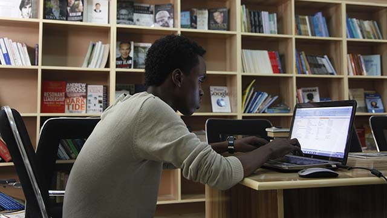
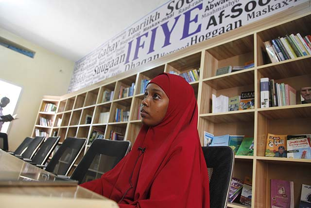

Voice of America
Library speaks volumes about commitment to community

Ayan Mohamed Ali, a founder, uses social media to stock shelves of bricks-and-mortar learning center
By Abdulaziz H. Osman and Carol Guensburg
In a country where both the public school and library systems have been decimated, where can young Somalis find outlets for learning?
If they’re lucky, they might encounter someone like Ayan Mohamed Ali, a 26-year-old so determined to encourage reading that she co-founded and subsidizes Mogadishu’s first public library in decades. She uses the internet to smooth a path for learners.
Ali and nine other young friends opened the library last June in the capital city’s Hodan district. They named it Ifiye , the Somali word for “enlighten.” The library fills a void left after the central government’s collapse shuttered the National Library in the 1990s. (That building most recently has been used to shelter internally displaced people, though a local think tank and civic activists are trying to resurrect it as a library.)
Ali and friends “used to do debates and awareness programs for the youth” at hotel meeting rooms, she told VOA in explaining Ifiye’s genesis. “We used to talk about entrepreneurship.” Their talk led to action. All 10 agreed to regularly chip in 30 percent of their earnings – Ali, a graduate of Gollis University in Somaliland, works at a Mogadishu business center – to rent space and pay for a staff person. They all brought books from home to begin stocking shelves.
“We had some writers at the opening ceremony, and after that we posted the opening images on social media,” Ali recalled. The founders made Facebook and Instagram appeals for “books that will have impact or influence the readers.”
Donors, including those from the diaspora, contributed books and money. Today, the library’s collection includes hundreds of volumes, primarily in Somali, English and Arabic, with a smattering in Italian, harkening to the country’s colonial past. The selections cover history and culture, biographies of Indian independence leader Mahatma Gandhi and Apple founder Steve Jobs, self-help books such as “Think and Grow Rich,” and religious tomes like “Prayer in Islam” and “Fortress of the Muslim.”
Ifiye provides a stimulating and safe space for learning. One of the library’s founders says they intend to offer free internet access when the budget permits. (VOA)
The free lending library draws at least 15 youngsters and adults a day, and Ali hopes that number will grow via social media and word of mouth. She and other founders plan to install public internet as soon as their budget permits.
Ifiye – open from 7 a.m. to 5 p.m. daily except Fridays, the Muslim holy day – also hosts a book discussion every Wednesday as well as occasional debates.
“We don’t do any political debate because we don’t want to jeopardize our security,” Ali said, alluding to war lords and militant groups.
Instead, debates center on youths – and how to help them fulfill their potential. “To us,” Ali added, “the biggest success is seeing youth who can read and write.”
Ayan Mohamed Ali, a co-founder of Ifiye, says the new lending library’s ‘challenges include finding people who want to read’ in Somalia’s predominantly oral society. (VOA)
Low literacy levels
That’s elusive in Somalia, a country with a rich oral tradition but limited literacy. Only three in 10 Somalis can read and write, the United Nations estimates – and the rate is even lower among those who were young when the civil war raged and the public school system fell apart. Now, relatively few youngsters attend school. Just 710,000 of an estimated 1.7 million primary school-age children were enrolled during the 2011-12 academic year, the Somali government reports (PDF). That’s a dismal 42 percent – one of the world’s lowest.
The nomadic lifestyles of Somalia’s many pastoralists – who herd goats, sheep and camels – “are not very well tailored” to classroom learning, explained Neven Knezevic, UNICEF’s education chief in Somalia. “Pastoral communities don’t always see the importance of formal education services.”
Even when they do, they may be deterred by lack of local school services, comparatively high costs or displacement by drought or conflict.
Knezevic said most youngsters who go to school attend a madrasa — “a key moral institution” for Islam — or some other privately run center because “government doesn’t have a subsidy scheme in place.”
Somalia’s outgoing education minister acknowledges major obstacles.
“Unfortunately, the government … has not had a very large economic base that would raise the revenue to sustain the kind of public education system that the country needs,” said Abdulkadir Hashi, who took office in June after several other political posts.
His successor in Somalia’s next administration will face the same challenge he did, which is to rebuild the public school system “so we can bring more access to the classroom.” Hashi said his government was working to improve teacher training and curriculum, among other things, and noted that last fall’s five-year $65 million education grant from the U.S. Agency for International Development held promise.
More and better education likely will improve young lives and, amateur librarian Ali insists, deter fighting.
“My point is, there are still some young boys carrying guns,” she said. “We need to do everything we can so they drop the guns and take up the pen.”
In the midst of war-torn Mogadishu, young Somali men and women have taken to their mobile phones to engage and connect with one another on social media.


About the project
This project explores internet freedom and how its availability, or restrictions, affect individuals. It’s a joint initiative by Radio Free Europe/Radio Liberty, Middle East Broadcasting Networks, Voice of America, Radio Free Asia and the Office of Cuba Broadcasting. They’re overseen by the Broadcasting Board of Governors.
About VOA
Voice of America provides trusted and objective news and information in 45 languages to a measured weekly audience of more than 236.6 million people around the world. For nearly 75 years, VOA journalists have told American stories and supplied content that many people cannot get locally: objective news and information about the US, their region and the world.